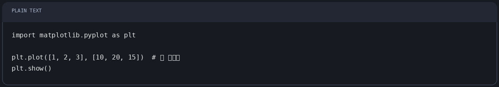
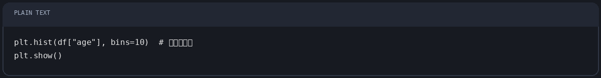
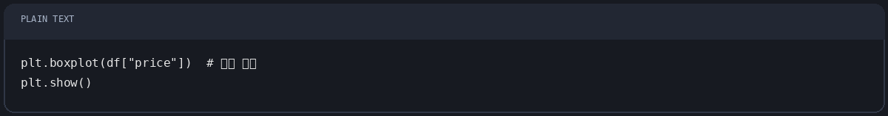
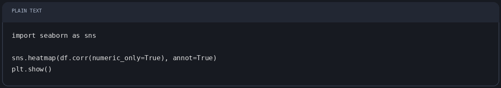
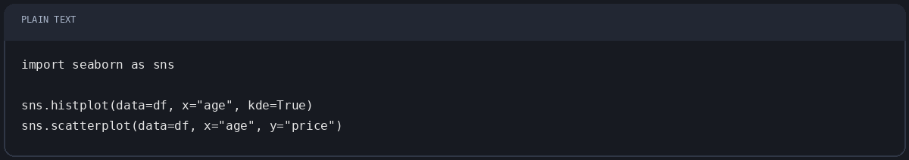
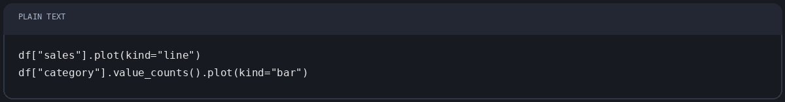

📚 2주차 Python 데이터 분석 (2026.10.21 Wed ~ 2026.10.23 Fri)
Total : 3 days
📕 C. Data Visualization (2026.10.23 Fri)
📃 a. Matplotlib (기본 그래프 시각화)
- Matplotlib : 데이터를 그래프로 표현하는 기본 시각화 라이브러리
- 주요 그래프 : 선 그래프(Line), 막대 그래프(Bar), 산점도(Scatter)
- 활용 : 데이터 변화, 항목별 비교, 변수 간 관계 확인

| 함수 | 기능 |
|---|---|
plt.plot() | 선 그래프 |
plt.bar() | 막대 그래프 |
plt.scatter() | 산점도 |
plt.xlabel() / plt.ylabel() | 축 이름 설정 |
plt.title() | 그래프 제목 설정 |
plt.show() | 그래프 출력 |
📃 b. Matplotlib 통계 시각화 (Histogram, Box Plot, Heatmap)
- Histogram : 데이터가 구간별로 얼마나 분포하는지 확인
- Box Plot : 중앙값, 사분위수, 이상치 후보 확인
- Heatmap : 색상으로 수치의 크기를 표현하며, 상관관계 분석 등에 활용



📃 c. Seaborn (통계 데이터 시각화)
- Seaborn : 통계 데이터 시각화를 간결하게 수행할 수 있는 라이브러리
- Matplotlib 기반으로 동작하며, 통계적 관계와 분포를 쉽게 표현
- 주요 그래프 : 분포 그래프, 상자 그림, 변수 간 관계 그래프

| 함수 | 기능 |
|---|---|
sns.histplot() | 데이터 분포 확인 |
sns.boxplot() | 분포 및 이상치 후보 확인 |
sns.scatterplot() | 두 변수의 관계 확인 |
sns.heatmap() | 상관관계 등을 색상으로 표현 |
sns.pairplot() | 여러 수치형 변수의 관계 비교 |
📃 d. Pandas Plot (DataFrame에서 바로 시각화)
- Pandas Plot : DataFrame이나 Series에서 직접 그래프를 생성하는 기능
- 빠른 탐색과 기초적인 데이터 시각화에 적합

kind="line": 선 그래프kind="bar": 막대 그래프kind="hist": 히스토그램kind="box": 박스 플롯
📕 D. EDA (Exploratory Data Analysis, 탐색적 데이터 분석)
- EDA : 데이터를 본격적으로 분석하거나 모델링하기 전에 데이터의 구조, 분포, 특징 및 문제점을 탐색하는 과정
- 목적 : 데이터의 패턴, 변수 간 관계, 결측치, 이상치 등을 파악
- 주요 과정 : 데이터 확인 → 결측치·이상치 점검 → 통계 요약 → 시각화 → 인사이트 도출
📃 a. EDA 실습 1 (Seoul Bike Data)
- 목표 : 서울 자전거 대여량과 시간·날씨 등 환경 변수의 관계 탐색
- 분석 항목 : 시간대별 대여량, 기온과 대여량의 관계, 계절별 이용 패턴
- 활용 : 시계열 그래프, 산점도, 상관관계 분석
📃 b. EDA 실습 2 (Online Shop)
- 목표 : 온라인 쇼핑 데이터에서 구매 패턴과 매출 특성 탐색
- 분석 항목 : 상품별 판매량, 고객별 구매 패턴, 매출 분포, 결측치 및 이상치
- 활용 : 그룹별 집계(
groupby), 막대 그래프, 히스토그램
📃 c. EDA 실습 3 (Video Game Sales)
- 목표 : 비디오 게임 판매 데이터에서 시장 및 판매 특성 탐색
- 분석 항목 : 플랫폼별·장르별 판매량, 출시 연도별 변화, 지역별 판매 비교
- 활용 : 그룹별 집계, 시계열 그래프, 막대 그래프, 상관관계 분석
💡 핵심 요약
- Matplotlib : 기본 그래프를 직접 구성하는 시각화 도구
- Seaborn : 통계적 분포와 변수 간 관계를 쉽게 시각화
- Pandas Plot : DataFrame에서 빠르게 그래프 생성
- Histogram / Box Plot / Heatmap : 데이터 분포, 이상치 후보, 변수 간 관계 탐색
- EDA : 데이터를 탐색해 특징과 문제점을 파악하고 분석 방향을 설정
🎯 학습 목표: Pandas로 데이터를 정리하고 Matplotlib·Seaborn으로 시각화하여, 실제 데이터에서 패턴과 문제점을 발견할 수 있다.